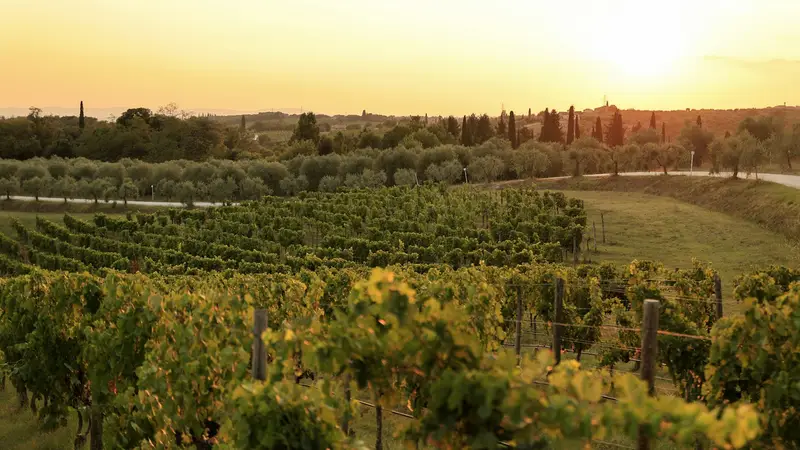

Vinos de España — Pasión en cada Copa
Descubre la riqueza vinícola de España: desde los robustos tintos de Rioja hasta los frescos Albariños de Galicia. Una tradición de siglos.
Porrón PersonalizadoPrincipales Regiones Vinícolas
Rioja
La región más famosa. Vinos tintos elegantes con crianza en barrica americana y francesa.
- Uvas: Tempranillo, Garnacha, Graciano
- Estilos: Crianza, Reserva, Gran Reserva
Ribera del Duero
Vinos potentes de alta altitud. Tinta del País, la Tempranillo local.
- Carácter: Taninos firmes, alta concentración
- Maridaje: Asados, caza
Priorat
Vinos de montaña intensos y minerales. Garnacha y Cariñena en suelo de pizarra.
- Suelo: Llicorella (pizarra)
- Carácter: Especiado, largo final
Rías Baixas
Albariños frescos y aromáticos. Perfectos con marisco y tapas.
- Uva: Albariño
- Carácter: Fresco, mineral, afrutado
Uvas Autóctonas
España tiene una diversidad única de variedades de uva.
Tempranillo
La reina de España. Vinos con notas de fruta roja, vainilla y tabaco.
Garnacha
Vinos cálidos y frutales. Ideal para blends.
Albariño
Blanco aromático de Galicia. Cítrico y floral.
Verdejo
Blanco de Rueda. Fresco, herbáceo, con cuerpo.
Tradición Española
En España, el vino es cultura y convivencia. Una de las formas más auténticas de disfrutarlo es con el porrón, el vaso tradicional catalán que permite beber sin tocar los labios.
Perfecto para compartir en reuniones, comidas y celebraciones. Ahora disponible como porrón personalizado con grabado de tu foto.
Ver Porrón Personalizado
¿Listo para la experiencia?
Descubre el vino español de la forma más auténtica: con un porrón personalizado.
Comprar en Etsy →